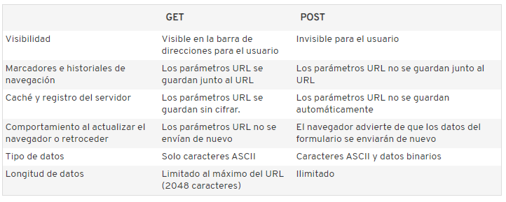

GET & POST
GET
El concepto GET es obtener información del servidor. Traer datos que están en el servidor, ya sea en un archivo o base de datos, al cliente. Con el método GET, los datos que se envían al servidor se escriben en la misma dirección URL. En la ventana del navegador, lo encontrarás así: www.ejemplo.com/registrarse.php?nombre=pedro&apellido=perez&edad=55&genero=hombre
Ventajas de GET
Los parámetros URL se pueden guardar junto a la dirección URL como marcador. De esta manera, puedes introducir una búsqueda y más tarde consultarla de nuevo fácilmente. También se puede volver a acceder a la página a través del historial del navegador. Esto resulta práctico, por ejemplo, si visitas con asiduidad un mismo lugar en Google Maps o si guardas páginas web con configuraciones de filtro determinadas.
Desventajas de GET
La mayor desventaja del método GET es su débilprotección de los datos. Los parámetros URL que se envían quedan visibles en la barra de direcciones del navegador y son accesibles sin clave en el historial de navegación, en el caché y en el log de los servidores. Otra desventaja es que su capacidad es limitada: dependiendo del servidor y del navegador, no es posible introducir más de 2000 caracteres. Además, los parámetros URL solo pueden contener caracteres ASCII (letras, números, signos, etc.) y no datos binarios como archivos de audio o imágenes.
POST
POST sin embargo es enviar información desde el cliente para que sea procesada y actualice o agregue información en el servidor, como sería la carga o actualización en sí de una noticia. El método POST introduce los parámetros en la solicitud HTTP para el servidor. Por ello, no quedan visibles para el usuario. Además, la capacidad del método POST es ilimitada.
Ventajas de POST
En lo relativo a los datos, como, por ejemplo, al rellenar formularios con nombres de usuario y contraseñas, el método POST ofrece mucha discreción. Los datos no se muestran en el caché ni tampoco en el historial de navegación. La flexibilidad del método POST también resulta muy útil: no solo se pueden enviar textos cortos, sino también otros tipos de información, como fotos o vídeos.
Desventajas de POST
Cuando una página web que contiene un formulario se actualiza (por ejemplo, cuando se retrocede a la página anterior) los datos del formulario debentransferirse de nuevo (puede que alguna vez hayas recibido una de estas advertencias). Por este motivo, existe el riesgo de que los datos se envíen varias veces por error, lo que, en el caso de una tienda online, puede dar lugar a pedidos duplicados. No obstante, las webs modernas de las tiendas suelen estar preparadas para evitar este tipo de problemas. Además, los datos transferidos con el método POST no pueden guardarsejunto al URL como marcador.
¿Cúando usar uno u otro?
El método POST es aconsejable cuando el usuario debe enviar datos o archivos al servidor, como, por ejemplo, cuando se rellenan formularios o se suben fotos.
El método GET es adecuado para la personalización de páginas web: el usuario puede guardar búsquedas, configuraciones de filtros y ordenaciones de listas junto al URL como marcadores, de manera que en su próxima visita la página web se mostrará según sus preferencias.
A modo de resumen: GET para la configuración de páginas web (filtros, ordenación, búsquedas, etc.) POST para la transferencia de información y datos.